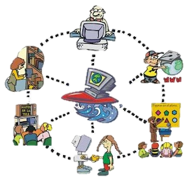

La globalización es un proceso histórico de integración mundial en los ámbitos económico,
político, tecnológico, social y cultural, que ha convertido al mundo en un lugar cada vez más interconectado. En
ese sentido, se dice que este proceso ha hecho del mundo una aldea global.
La disolución progresiva de las fronteras económicas y comunicacionales ha generado una expansión capitalista.
Esta, a su vez, ha posibilitado inversiones y transacciones financieras globales orientadas a mercados distantes
o emergentes, en términos que antiguamente resultaban muy difíciles, altamente costosos o inviables.
El proceso de globalización ha modificado la forma en que interactúan los países y los sujetos. Ha generado gran
impacto en aspectos económicos (mercado laboral, comercio internacional), políticos (instauración de sistemas
democráticos, respeto de los derechos humanos), así como un mayor acceso a la educación y a la tecnología, entre
otros.
caracteristicas
es un fenómeno planetario
es desigual y asimétrica
depende de la conectividad
globaliza las mercancías
favorece la uniformidad
conforma un modelo financiero mundial
tipos
globalizacion economica
globalizacion politica
globalizacion tecnologica
globalizacion cultural
globalizacion social
¿Causas de la Globalizacion?
Las causas de la globalización a lo largo de los dos últimos siglos están intrínsecamente
relacionadas con cambios económicos y políticos que han afectado a la sociedad global.
Reestructuración geopolítica del siglo XX
A lo largo del s. XX se han sucedido diferentes Órdenes Geopolíticos Mundiales, liderados, en cada
periodo, por una potencia que establecía las normas internacionales, aceptadas por los demás Estados.
Con el fin facilitar la recuperación y reconstrucción de los países que habían participado en la guerra,
EEUU puso en marcha el Plan Marshall. Un programa que ayudaba económicamente a Europa y con el que se
inició el flujo de capitales a nivel internacional.
Aceleración de la apertura económica mundial
Volviendo al fin de la Segunda Guerra Mundial entenderemos
mejor cómo hemos llegado al sistema de
comercio multilateral actual.
En 1948, 23 países firmaron el Acuerdo General sobre Aranceles Aduaneros y
Comercio (GATT), que buscaba establecer mecanismos para una cooperación económica más profunda entre los
participantes.

Aceleración de la apertura económica mundial
Volviendo al fin de la Segunda Guerra Mundial entenderemos
mejor cómo hemos llegado al sistema de
comercio multilateral actual.
En 1948, 23 países firmaron el Acuerdo General sobre Aranceles Aduaneros y
Comercio (GATT), que buscaba establecer mecanismos para una cooperación económica más profunda entre los
participantes.